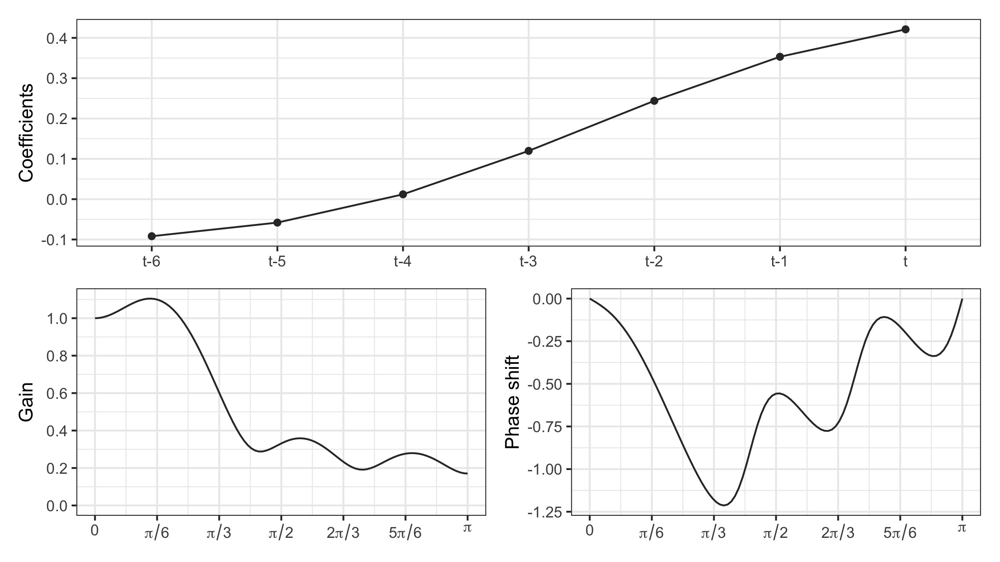
3 Amélioration des estimations de tendance-cycle grâce à la paramétrisation locale des filtres de régression polynomiale
Alain Quartier-la-Tente ![]()
Références de l’article :
Quartier-la-Tente, A. (2024). Improving Real-Time Trend Estimates Using Local Parametrization of Polynomial Regression Filters. Journal of Official Statistics, 40(4), 685-715. https://doi.org/10.1177/0282423X241283207.
3.1 Introduction
Analysis of the economic cycle, and in particular the early detection of turning points, is a major topic in the analysis of economic outlook. To achieve this, economic indicators are generally seasonally adjusted. However, in order to improve their interpretability, it may be necessary to perform additional smoothing to reduce noise, thereby to analyse the trend-cycle component. By construction, trend-cycle extraction methods are closely related to seasonal adjustment methods, since they are generally applied to seasonally adjusted series.
A moving average, or linear filter, is a statistical method that consists of applying a rolling weighted mean to a times series: for each date \(t\) it computes a weighted mean of \(p\) past points and \(q\) future points where \(p,q\geq0\) depends on the moving average. They are ubiquitous in business cycle extraction and seasonal adjustment methods. For example, the X-11 seasonal adjustment method (Ladiray et Quenneville 2011), used in X-13ARIMA-SEATS software (Monsell 2007), uses several moving averages to estimate the main components of a time series. Symmetric filters are applied to the centre of the series and for trend-cycle extraction, the most popular symmetric filter is the Henderson (1916) moving average, which is used in the X-11 seasonal adjustment algorithm. However, for real-time estimates, due to the lack of future observations, all these methods must rely on asymmetric filters to estimate the most recent points. For example, for trend-cycle extraction, X-11 uses Henderson’s symmetric filter and Musgrave (1964)’s asymmetric filters on an extended series using an ARIMA model. Since the predicted values are linear combinations of past values, this amounts to applying asymmetric moving averages at the end of the series. If the classic asymmetric moving averages have good properties regarding the future revisions induced by the process (for example Pierce (1980) shows similar performances in terms of revisions of X-11 compared to theoretically superior procedure based on ARIMA forecast models), they create, by construction, phase shifts that impact the real-time estimation of turning points, introducing time delay in the detection.
In the last decades, numerous authors proposed methods for the construction of alternative moving averages to derive trend-cycle estimates. In particular, Wildi et McElroy (2019) put forth a model-based approach based on the mean squared error decomposition, while Proietti et Luati (2008), Dagum et Bianconcini (2008) and Grun-Rehomme, Guggemos, et Ladiray (2018) proposed non-parametric methods based, respectively, on local polynomial regression, Reproducing Kernel Hilbert Space (RKHS) theory and minimising of a weighted sum of moving average quality criteria. All of the aforementioned approaches encompass both Henderson’s symmetric filter and Musgrave’s asymmetric filters. More recently, Quartier-la-Tente (2024) conducted a comparative analysis of these methods by describing a general unifying framework to derive moving averages; Dagum et Bianconcini (2023) provided statistical tests to assess the main properties of the filters defined in terms of revisions and the detection of turning points.
The aim of this study is to propose two extensions to the Proietti et Luati (2008) class of filters in order to take account of two drawbacks of those methods: firstly adding, in the optimisation process, a timeliness criterion to directly control the phase shift (i.e., the delay in detecting turning points); secondly calibrating asymmetric filters locally, while they are generally calibrated globally using assumptions that may be wrong locally. Those extensions are implemented in the statistical software R (R Core Team 2022) through the rjd3filters package (Palate et Quartier-la-Tente 2024) and can therefore be easily used. All the code associated to this paper is available at https://github.com/AQLT/joffstats2024.
In Section 3.2, we describe the general properties of moving averages and the associated quality criteria. This allows us to understand the foundations behind the construction of moving averages from local polynomial regressions, as well as those behind the two extensions proposed in this article (Section 3.3). In Section 3.4, all these methods are compared empirically on simulated and real series.
3.2 Local trend-cycle models and moving averages
The basic assumption used in time series decomposition methods is that the input observed time series, \(y_t\), can be decomposed into a signal component \(\mu_t\) and an erratic component \(\varepsilon_t\) (called irregular): \[ f(y_t)=\mu_t+\varepsilon_t \] where \(f\) denotes some appropriate transformation (usually logarithmic or no transformation). To simplify further notations, \(y_t\) will denote the transformed observed series. The noise component \(\varepsilon_t\) is usually assumed to be a white noise. Assuming that the input time series is seasonally adjusted (or without seasonality), the signal \(\mu_t\) represents the trend (sustained and systematic variations over a long period of time) and cycle (cyclical movements superimposed upon the long-term trend) components, here estimated jointly and called trend-cycle \(TC_t\). This component can be locally approximated by a polynomial degree (Section 3.3): \[ \mu_t = \sum_{j=0}^d\beta_jt^j+\xi_t \] with \(\xi_t\) a stochastic process uncorrelated with \(\varepsilon_t\). Even if some papers model \(\xi_t\) and \(\varepsilon_t\) separately (see for example Gray et Thomson 2002), a usual assumption, adopted in this paper, is to is to gather \(\xi_t\) and \(\varepsilon_t\). Thus, the trend-cycle \(TC_t\) is considered as deterministic and modelled as a polynomial trend of degree \(d\). The coefficients \((\beta_0,\dots,\beta_d)\) can be estimated by weighted least squares. The estimate \(\hat \beta_0\) provides the trend-cycle estimate \(\widehat{TC}_t\) and it can be shown that this equivalent to apply of moving average (Section 3.3). The goal of this paper is to present two new methods to separate the trend-cycle component from the noise component in real-time (i.e., when no future point is known), using moving averages build on local polynomial smoothing techniques.
Numerous papers describe the definition and the properties of moving averages and linear filters; see for example Ladiray (2018). In this section we summarize some of the main results to understand the next sections.
Let \(p\) and \(f\) two integers, a moving average \(M_{\boldsymbol\theta}\) is defined by a set of coefficients \(\boldsymbol\theta=\transp{\begin{pmatrix}\theta_{-p}&\cdots&\theta_{f}\end{pmatrix}}\) such that for all time series \(y_t\): \[ M_{\boldsymbol\theta}(y_t)=\sum_{k=-p}^{+f}\theta_kX_{t+k}. \]
\(p+f+1\) is called the moving average order.
When \(p=f\) the moving average is said to be centred. If we also have \(\forall k:\:\theta_{-k} = \theta_k\), the moving average \(M_{\boldsymbol\theta}\) is said to be symmetric. In this case, the quantity \(h=p=f\) is called the bandwidth.
3.2.1 Gain and phase shift functions
To interpret the notions of gain and phase shift, it is useful to illustrate the effects of moving averages on harmonic series \(y_t=\e^{-i\omega t}\) with \(\omega\in[0,\pi]\). The moving average \(M_{\boldsymbol\theta}\) transforms \(y_t\) into: \[ Y_t = M_{\boldsymbol\theta}y_t = \sum_{k=-p}^{+f} \theta_k \e^{-i \omega (t+k)} = \left(\sum_{k=-p}^{+f} \theta_k \e^{-i \omega k}\right)\cdot y_t. \] The function \(\Gamma_{\boldsymbol\theta}(\omega)=\sum_{k=-p}^{+f} \theta_k \e^{-i \omega k}\) is called the transfer function or frequency response function. The frequency response function can alternatively be defined as \(\Gamma_{\boldsymbol\theta}(\omega)=\sum_{k=-p}^{+f} \theta_k \e^{i \omega k}\) or \(\Gamma_{\boldsymbol\theta}(\omega)=\sum_{k=-p}^{+f} \theta_k \e^{2\pi i \omega k}\). It can be rewritten as: \[ \Gamma_{\boldsymbol\theta}(\omega) = \rho_{\boldsymbol\theta}(\omega)\e^{i\varphi_{\boldsymbol\theta}(\omega)}, \] where \(\rho_{\boldsymbol\theta}(\omega)=G_{\boldsymbol\theta}(\omega)=\lvert\Gamma_{\boldsymbol\theta}(\omega)\rvert\) is the gain or amplitude function and \(\varphi_{\boldsymbol\theta}(\omega)\) is the phase shift or time shift function. We thus have: \[\begin{align*} \rho_{\boldsymbol\theta}(\omega) &=\sqrt{\left(\sum_{k=-p}^{+f}\theta_k\cos(\omega k)\right)^2+ \left(\sum_{k=-p}^{+f}\theta_k\sin(\omega k)\right)^2} \\ \tan \varphi_{\boldsymbol\theta}(\omega) &=- \frac{\sum_{k=-p}^{+f}\theta_k\sin(\omega k)}{\sum_{k=-p}^{+f}\theta_k\cos(\omega k)} \text{ if }\sum_{k=-p}^{+f}\theta_k\cos(\omega k) \ne 0 \\ &= 0 \text{ if }\sum_{k=-p}^{+f}\theta_k\cos(\omega k) = 0. \end{align*}\] The phase shift is sometimes represented as \(\phi_{\boldsymbol\theta}(\omega)=\frac{\varphi_{\boldsymbol\theta}(\omega)}{\omega}\) to measure it in number of periods. For all symmetric moving averages we have \(\varphi_{\boldsymbol\theta}(\omega)\equiv 0 \;(modulo\;{\pi})\).
To sum up, applying a moving average to a harmonic times series (\(y_t=\e^{-i\omega t}\)) affects it in two different ways:
by multiplying it by an amplitude coefficient \(\rho_{\boldsymbol\theta}\left(\omega\right)\) (gain);
by “shifting” it in time by \(\varphi_{\boldsymbol\theta}(\omega)/\omega\) which directly affects the detection of turning points. When \(\varphi_{\boldsymbol\theta}(\omega)/\omega<0\) the time shift is negative: the turning point is detected with delay.
Fourier decomposition allows us to analyse any time series as a sum of harmonic series, and each component (trend, cycle, seasonal, irregular) is associated with a set of frequencies. With \(\omega = 2\pi/s\), the harmonic series of frequency \(\omega\) represents a series that repeats itself every \(s\) periods. For example, for a monthly series (\(s=12\) observations per year), seasonal movements are those that repeat every year: they are therefore associated with frequencies \(2\pi/12\) (annual periodicity), \(2\pi/12\times 2=2\pi/6,\dots,2\pi/12\times 5\). In this paper, we consider that the trend-cycle is associated with frequencies in the interval \([0, 2\pi/12]\), i.e., movements recurring at least every 12 months. Even if different frequencies are sometimes used (e.g. \([0, 2\pi/36]\) to consider only cycles of at least 36 months), this has no impact on the results of the study. The other frequencies, \([2\pi/12, \pi]\) are associated with the irregular component.
Figure 3.1 shows the gain and phase shift function for the asymmetric Musgrave filter (see Section 3.3.2) often used for real-time trend-cycle estimation (i.e., when no point in the future is known). The gain function is greater than 1 on the frequencies associated with the trend-cycle (\([0, 2\pi/12]\)): this means that the trend-cycle is well preserved and that short cycles of 1 to 2 years (\([2\pi/24,2\pi/12]\)) are even amplified. At other frequencies, the gain function is less than 1, but always positive: this means that the series smoothed by this moving average will always contain noise, even if it is attenuated. Analysis of the phase shift shows that the shorter the cycles, the greater the phase shift: this means that on series smoothed by this moving average, turning points could be detected at the wrong date.
Observed in figure 3.1 that for monthly times series, 12-month cycles (associated to the frequency \(2\pi/12=\pi/6\)) are amplified by 10% (\(G_{\boldsymbol\theta}(\pi/6)\simeq1.1\)) and associated turning points are detected with a delay of 1 months (\(\varphi_{\boldsymbol\theta}(\pi/6)/(\pi/6)\simeq -1\)). 8-month cycles (associated to the irregular) are only reduced by 6% (\(G_{\boldsymbol\theta}(\pi/4)\simeq0.94\)). Note that the Musgrave filter depends on a ratio denoted \(I/C\) (see Section 3.3). In X-11, for monthly series, when the bandwidth is 6 (i.e.: a symmetric Henderson filter of order 13 is used, what is used in most cases), the ratio is fixed to 3.5 and this value is used in this figure.
3.2.2 Desirable properties of a moving average
To decompose a time series into a seasonal component, a trend-cycle and the irregular, the X-11 decomposition algorithm (used in X-13ARIMA-SEATS) uses a succession of moving averages, all with specific constraints.
In this paper, we assume that our initial series \(y_t\) is seasonally adjusted and can be written as the sum of a trend-cycle, \(TC_t\), and an irregular (noise) component, \(\varepsilon_t\): \[ y_t=TC_t+\varepsilon_t. \] The aim will be to build moving averages that best preserve the trend-cycle (\(M_{\boldsymbol\theta} (TC_t)\simeq TC_t\)).
Trend-cycles are generally modelled by local polynomial trends (see Section 3.3) and, in order to best preserve the trend-cycles, we thus design moving averages that preserve the polynomial trends. A moving average \(M_{\boldsymbol\theta}\) preserves a function of time \(f(t)\) if \(\forall t,M_{\boldsymbol\theta} f(t)=f(t)\).
For a moving average \(M_{\boldsymbol\theta}\), it can be shown that:
- \(M_{\boldsymbol\theta}\) preserves polynomials of degree \(d\) if and only if: \[ \sum_{k=-p}^{+f}\theta_k=1 \text{(preserves constant) and } \forall j \in \left\{1,2,\dots,d\right\},\: \sum_{k=-p}^{+f}k^j\theta_k=0. \]
- If \(M_{\boldsymbol\theta}\) is symmetric (\(p=f\) and \(\theta_{-k} = \theta_k\)) and preserves polynomials of degree \(2d\) then it also preserves polynomials of degree \(2d+1\).
3.2.3 Real-time estimation and asymmetric moving average
For symmetric filters, the phase shift function is equal to 0 (modulo \(\pi\)). So there is no delay in detecting turning points. However, they cannot be used in the beginning and in the end of the time series because no past or future value can be used. Thus, for real-time estimation, it is needed to build asymmetric moving averages that approximate the symmetric moving average.
Several approaches can be used for real-time estimation:
Use asymmetric moving averages to take account of the lack of available data;
Apply symmetric filters to an extended forecast series (which is equivalent to using asymmetric moving averages, since forecasts are linear combinations of the past). This method seems to date back to De Forest (1877), which also suggests modelling a polynomial trend of degree three or less at the end of the period. A similar approach is used in the X-13ARIMA-SEATS seasonal adjustment method: the series is extended by one year (by default) with an ARIMA model to minimise the revisions associated to asymmetric filters. Since the final filter used for the seasonal adjustment extraction is much longer than one year (in most of the cases, for monthly series, the bandwidth is 78), the input series is just partially extended (and asymmetric filters are still used) to prevent instability over long periods (e.g., outliers or model shifts).
Conversely, the implicit forecasts of an asymmetric moving average can be deduced from a reference symmetric moving average. This allows us to judge the quality of real-time estimates of the trend-cycle and to anticipate future revisions when forecasts are far from expected evolutions.
Let us denote \(\boldsymbol v=(v_{-h},\dots, v_{h})\) the reference symmetric moving average (used to compute the final estimates) and \(\boldsymbol w^0,\dots, \boldsymbol w^{h-1}\) a sequence of asymmetric moving averages used for the intermediate estimates. \(\boldsymbol w^0=(w_{-h}^0, \dots, w_{0}^0)\) is used for estimation in real-time estimate (when 0 point in the future is known), \(\boldsymbol w^1=(w_{-h}^1, \dots, w_{0}^1, w_{1}^1)\) is used for estimation of the penultimate point (when only 1 in the future is known), and so on. Let \(y_{t-h},\dots,y_{t}\) be the observed series during the last \(h\) periods (for which asymmetric moving averages are used to get the intermediate trend-cycle estimates for the dates \(t-h\) to \(t\)). The implicit forecast \(y_{t+1}^*,\dots y_{t+h}^*\) induced by \(w^0,\dots w^{h-1}\) are the forecasts of the series \(y_t\) for which the estimates of the symmetric filter applied to the extended series \(\boldsymbol y^* = (y_{t-h}, \dots, y_t, y_{t+1}^*,\dots y_{t+h}^*)\) produce the same estimates as the asymmetric filter applied to the series \(\boldsymbol y^*\). This means: \[\begin{align*}
\underbrace{\sum_{i=-h}^0 v_iy_{t+i} + \sum_{i=1}^h v_iy_{t+i}^*}_{\text{smoothing by }\boldsymbol v\text{ of the extended series}} &=
\underbrace{\sum_{i=-h}^0 w_i^0y_{t+i}}_{\text{smoothing by }\boldsymbol w^0\text{ using }0\text{ point after }t} \\
&=
\underbrace{\sum_{i=-h}^0 w_i^1y_{t+i} + w_1^1y_{t+1}^*}_{\text{smoothing by }\boldsymbol w^1\text{ using }1\text{ point after }t} \\
&= \underbrace{\sum_{i=-h}^0 w_i^2y_{t+i} + \sum_{i=1}^{2}w_i^2y_{t+i}^*}_{\text{smoothing by }\boldsymbol w^2\text{ using }2\text{ points after }t} \\
&= \cdots \\
&=\underbrace{\sum_{i=-h}^0 w_i^{h-1}y_{t+i} + \sum_{i=1}^{h-1} w_i^{h-1}y_{t+i}^*}_{\text{smoothing by }\boldsymbol w^{h-1}\text{ using }h-1\text{ points after }t}
\end{align*}\] For any integer \(q\) between 0 and \(h-1\), using for convention \(w_t^q=0\) if \(t>q\) we then have: \[
\sum_{i=1}^h (v_i- w_i^q) y_i^*
=\sum_{i=-h}^0 (w_i^q-v_i)y_i.
\] In matrix form, this is equivalent to solving: \[
\scriptstyle
\begin{pmatrix}
v_1 & v_2 & \cdots & v_h \\
v_1 - w_1^1 & v_2 & \cdots & v_h \\
\vdots & \vdots & \cdots & \vdots \\
v_1 - w_1^{h-1} & v_2-w_2^{h-1} & \cdots & v_h
\end{pmatrix}
\begin{pmatrix}y_1^* \\ \vdots \\ y_h^*\end{pmatrix}=
\begin{pmatrix}
w_{-h}^0 - v_{-h} & w_{-(h-1)}^0 - v_{-(h-1)} & \cdots & w_{0}^0 - v_{0} \\
w_{-h}^1 - v_{-h} & w_{-(h-1)}^1 - v_{-(h-1)} & \cdots & w_{0}^1 - v_{0} \\
\vdots & \vdots & \cdots & \vdots \\
w_{-h}^{h-1} - v_{-h} & w_{-(h-1)}^{h-1} - v_{-(h-1)} & \cdots & w_{0}^{h-1} - v_{0}
\end{pmatrix}
\begin{pmatrix}y_{-h} \\ \vdots \\ y_0\end{pmatrix}.
\] This is implemented in the rjd3filters::implicit_forecast() function.
As highlighted by Wildi et Schips (2004), extending the series through forecasting with an ARIMA model is equivalent to calculating asymmetric filters whose coefficients are optimised in relation to the one-step ahead forecast. In other words, the aim is to minimise the revisions between the first and last estimates (with the symmetric filter). However, the phase shift induced by the asymmetric filters is not controlled: we might prefer to have faster detection of turning points and a larger revision rather than just minimising the revisions between the first and last estimates. Furthermore, since the coefficients of the symmetric filter (and therefore the weight associated with distant forecasts) decrease slowly, we should also be interested in the performance of multi-step ahead forecasting. This is why it may be necessary to define alternative criteria for judging the quality of asymmetric moving averages.
3.3 Non-parametric regression and local polynomial regression
Many trend-cycle extraction methods are based on non-parametric regressions, which are particularly flexible because they do not assume any predetermined dependency in the predictors. In practice, local regressions can be used. More specifically, consider a set of points \((x_t,y_t)_{1\leq t\leq n}\) and we here consider that \(x_t=t\) (no external regressor is used). Non-parametric regression involves assuming that there exists a function \(\mu\), to be estimated, such that \(y_t=\mu(t)+\varepsilon_t\) with \(\varepsilon_t\) an error term. According to Taylor’s theorem, for any date \(t_0\), if \(\mu\) is differentiable \(d\) times, then: \[ \forall t,\:\mu(t) = \underbrace{\mu(t_0)}_{=TC_{t_0}} + \mu'(t_0)(t-t_0)+\dots + \frac{\mu^{(d)}(t_0)}{d!}(t-t_0)^d+R_d(t), \tag{3.1}\] where \(R_d\) is a negligible residual term in the neighbourhood of \(t_0\). In a neighbourhood \(h(t_0)\) around \(t_0\), \(\mu\) can therefore be approximated by a polynomial of degree \(d\). The quantity \(h(t_0)\) is called the bandwidth. If \(\varepsilon_t\) is white noise, we can estimate \(\mu(t_0)=TC_{t_0}\) by least squares using the observations which are in \(\left[t_0-h(t_0),t_0+h(t_0)\right]\). In practice, this means assuming that the trend is locally polynomial. We also generally assume that the bandwidth is fixed over time: \(h(t_0)=h.\) This is also what is assumed in the seasonal adjustment algorithm X-11 and what will be assumed in this paper.
Various estimation methods can be used to derive symmetric and asymmetric moving averages. For example, Gray et Thomson (1996) propose a complete statistical framework that makes it possible, in particular, to model the error in approximating the trend by local polynomials. However, as the specification of this error is generally complex, simpler models may be preferred, such as that of Proietti et Luati (2008). Dagum et Bianconcini (2008) propose a similar modelling of the trend-cycle but using the theory of Hilbert spaces with reproducing kernels for estimation, which has the particular advantage of facilitating the calculation of different moving averages at different time frequencies. See Quartier-la-Tente (2024) for a more detailed comparison of the different recent methods for trend-cycle extraction included in the rjd3filters package.
In this paper we will focus on Proietti et Luati (2008) approach. Section 3.3.1 and Section 3.3.2 describes their approach to build symmetric moving averages (used for the final estimates of the trend-cycle component) and asymmetric moving averages (used for real-time estimates). This paper proposed two extensions of their approach to build asymmetric moving averages: a first one adding a criteria to control the phase shift (Section 3.3.4), not used in the simulation (Section 3.4) but which could be used in future studied; a second one using a local parametrisation of a parameter usually parametrised globally (Section 3.3.3), which is used in the simulation.
3.3.1 Symmetric moving averages and local polynomial regression
Using Proietti et Luati (2008)’s framework, we assume that our time series \(y_t\) can be decomposed into \[ y_t=TC_t+\varepsilon_t, \] where \(TC_t\) is the trend-cycle and \(\varepsilon_{t}\overset{i.i.d}{\sim}\mathcal{N}(0,\sigma^{2})\) is the noise (the series is therefore seasonally adjusted). Within a neighbourhood \(h\) of \(t\), the local trend \(TC_t\) is approximated by a polynomial of degree \(d\), such that \(TC_t\simeq m_{t}\) with: \[ \forall j\in\left\{-h,-h+1,\dots,h\right\},\: y_{t+j}=m_{t+j}+\varepsilon_{t+j},\quad m_{t+j}=\sum_{i=0}^{d}\beta_{i}j^{i}. \] The problem of trend extraction is equivalent to estimating \(m_t=TC_t=\beta_0\) (the constant in the previous formula).
In matrix notation: \[ \underbrace{\begin{pmatrix}y_{t-h}\\ y_{t-(h-1)}\\ \vdots\\ y_{t}\\ \vdots\\ y_{t+(h-1)}\\ y_{t+h} \end{pmatrix}}_{\boldsymbol y}=\underbrace{\begin{pmatrix}1 & -h & h^{2} & \cdots & (-h)^{d}\\ 1 & -(h-1) & (h-1)^{2} & \cdots & (-(h-1))^{d}\\ \vdots & \vdots & \vdots & \cdots & \vdots\\ 1 & 0 & 0 & \cdots & 0\\ \vdots & \vdots & \vdots & \cdots & \vdots\\ 1 & h-1 & (h-1)^{2} & \cdots & (h-1)^{d}\\ 1 & h & h^{2} & \cdots & h^{d} \end{pmatrix}}_{\boldsymbol X}\underbrace{\begin{pmatrix}\beta_{0}\\ \beta_{1}\\ \vdots\\ \vdots\\ \vdots\\ \vdots\\ \beta_{d} \end{pmatrix}}_{\boldsymbol \beta}+\underbrace{\begin{pmatrix}\varepsilon_{t-h}\\ \varepsilon_{t-(h-1)}\\ \vdots\\ \varepsilon_{t}\\ \vdots\\ \varepsilon_{t+(h-1)}\\ \varepsilon_{t+h} \end{pmatrix}}_{\boldsymbol \varepsilon}. \tag{3.2}\]
Since \(d+1\) parameters are estimated with \(\boldsymbol \beta\), we need at least \(2h+1\) observations (thus \(2h\geq d\)) and the estimation is made by weighted least squares (WLS), which is equivalent to minimising the following objective function: \[ S(\hat{\beta}_{0},\dots,\hat{\beta}_{d})=\sum_{j=-h}^{h}\kappa_{j}(y_{t+j}-\hat{\beta}_{0}-\hat{\beta}_{1}j-\dots-\hat{\beta}_{d}j^{d})^{2}. \] where \(\kappa_j\) is a set of weights called a kernel. We have \(\kappa_j\geq 0:\kappa_{-j}=\kappa_j\), and with \(\boldsymbol K=diag(\kappa_{-h},\dots,\kappa_{h})\), the estimate of \(\boldsymbol \beta\) can be written as \(\hat{\boldsymbol\beta}=(\transp{\boldsymbol X}\boldsymbol K\boldsymbol X)^{-1}\transp{\boldsymbol X}\boldsymbol K\boldsymbol y.\) With \(\boldsymbol e_1=\transp{\begin{pmatrix}1 &0 &\cdots&0 \end{pmatrix}}\), the estimate of the trend is: \[ \hat{m}_{t}=\widehat{TC}_t=\boldsymbol e_{1}\hat{\boldsymbol \beta}=\transp{\boldsymbol \theta}\boldsymbol y=\sum_{j=-h}^{h}\theta_{j}y_{t-j}\text{ with }\boldsymbol \theta=\boldsymbol K\boldsymbol X(\transp{\boldsymbol X}\boldsymbol K\boldsymbol X)^{-1}\boldsymbol e_{1}. \tag{3.3}\] To conclude, the estimate of the trend \(\widehat{TC}_{t}\) can be obtained applying the symmetric filter \(\boldsymbol \theta\) to \(y_t\) (\(\boldsymbol \theta\) is symmetric due to the symmetry of the kernel weights \(\kappa_j\)). Moreover, since \(\transp{\boldsymbol X}\boldsymbol \theta=\boldsymbol e_{1}\) we have: \[ \sum_{j=-h}^{h}\theta_{j}=1,\quad\forall r\in\left\{1,2,\dots,d\right\}:\sum_{j=-h}^{h}j^{r}\theta_{j}=0. \] Hence, the filter \(\boldsymbol \theta\) preserves deterministic polynomials of order \(d\).
Regarding parameter selection, the general consensus is that the choice between different kernels is not crucial. See, for example, W. S. Cleveland et Loader (1996) or Loader (1999). The only desired constraints on the kernel are that it assigns greater weight to the central estimation (\(\kappa_0\)) and decreases towards 0 as it moves away from the central observation. The uniform kernel should therefore be avoided. It is then preferable to focus on two other parameters:
the degree of the polynomial, denoted by \(d\): if it is too small, there is a risk of biased estimates of the trend-cycle, and if it is too large, there is a risk of excessive variance in the estimates (due to over-adjustment);
the number of neighbours \(2h+1\) (or the window \(h\)): if it is too small, then there will be too little data for the estimates (resulting in high variance in the estimates), and if it is too large, the polynomial approximation will probably be wrong, leading to biased estimates.
In this paper we will use the Henderson kernel: \[
\kappa_{j}=\left[1-\frac{j^2}{(h+1)^2}\right]
\left[1-\frac{j^2}{(h+2)^2}\right]
\left[1-\frac{j^2}{(h+3)^2}\right].
\] However, several other kernels are available in rjd3filters.
3.3.2 Asymmetric moving averages and local polynomial regression
As mentioned in Section 3.2.3, for real-time estimation, several approaches can be used:
Apply symmetric filters to the series extended by forecasting \(\hat{y}_{n+l\mid n},l\in\left\{1,2,\dots,h\right\}\).
Build an asymmetric filter by local polynomial approximation on the available observations (\(y_{t}\) for \(t\in\left\{n-h,n-h+1,\dots,n\right\}\)).
Build asymmetric filters that minimise the mean squared error of revision under polynomial trend reproduction constraints.
Proietti et Luati (2008) show that the first two approaches are equivalent when forecasts are made by polynomial extrapolation of degree \(d\). They are also equivalent to the third approach under the same constraints as those of the symmetric filter. The third method is called direct asymmetric filtering (DAF). This method is used for real-time estimation in the STL seasonal adjustment method (Seasonal-Trend decomposition based on Loess, see R. B. Cleveland et al. (1990)). Although DAF filter estimates are unbiased, this is at the cost of greater variance in the estimates.
To solve the problem of the variance of real-time filter estimates, Proietti et Luati (2008) propose a general method for constructing asymmetric filters that allows a bias-variance trade-off. This is a generalisation of Musgrave (1964)’s asymmetric filters (used in the X-11 seasonal adjustment algorithm).
Rewriting equation 3.2: \[ \boldsymbol y=\begin{pmatrix}\boldsymbol U &\boldsymbol Z\end{pmatrix} \begin{pmatrix}\boldsymbol \gamma \\ \boldsymbol \delta\end{pmatrix}+\boldsymbol \varepsilon,\quad \boldsymbol \varepsilon\sim\mathcal{N}(0,\boldsymbol D). \tag{3.4}\] where \([\boldsymbol U,\boldsymbol Z]\) is of full rank and forms a subset of the columns of \(X.\) Defining the variance error as \(\boldsymbol D = \sigma^2\boldsymbol K^{-1}\) (to directly take into account the weights associated to the observations) and with \([\boldsymbol U,\boldsymbol Z] = \boldsymbol X\) we thus find the model associated to symmetric filters. The objective is to find an asymmetric filter \(\boldsymbol v\) which uses \(q\) points in the future and minimises the mean square error of revision (to the symmetric filter \(\boldsymbol \theta\)) under certain (polynomial) constraints. The matrices \(\boldsymbol y\), \(\boldsymbol U\), \(\boldsymbol Z\) and \(\boldsymbol \theta\) are partitioned as follows: \[ \boldsymbol y = \begin{pmatrix} \boldsymbol y_p \\ \boldsymbol y_f \end{pmatrix}, \quad \boldsymbol U = \begin{pmatrix} \boldsymbol U_p \\ \boldsymbol U_f \end{pmatrix}, \quad \boldsymbol Z = \begin{pmatrix} \boldsymbol Z_p \\ \boldsymbol Z_f \end{pmatrix}, \quad \boldsymbol \theta = \begin{pmatrix} \boldsymbol \theta_p \\ \boldsymbol \theta_f \end{pmatrix}, \] where \(\boldsymbol y_p\) is a matrix \((h+q+1)\times 1\) which denotes the set of available observations (from \(y_{t-h}\) to \(y_{t+q}\)) and \(\boldsymbol U\), \(\boldsymbol Z\) and \(\boldsymbol \theta\) are partitioned in the same way. The constraints are defined as \(\transp{\boldsymbol U_p}\boldsymbol v=\transp{\boldsymbol U}\boldsymbol \theta\): they represent the polynomial preservation constraints we want to impose on the asymmetric filter. \(\boldsymbol Z\) is then associated to the polynomial constraints of the symmetric filter not imposed on asymmetric filter. Proietti et Luati (2008) show that the problem is equivalent to finding \(v\) which minimises: \[ \varphi(\boldsymbol v)= \underbrace{ \underbrace{\transp{(\boldsymbol v-\boldsymbol \theta_{p})}\boldsymbol D_{p}(\boldsymbol v-\boldsymbol \theta_{p})+ \transp{\boldsymbol \theta_{f}}\boldsymbol D_{f}\boldsymbol \theta_{f}}_\text{revision error variance}+ \underbrace{[\transp{\boldsymbol \delta}(\transp{\boldsymbol Z_{p}}\boldsymbol v-\transp{\boldsymbol Z}\boldsymbol \theta)]^{2}}_{bias^2} }_\text{mean square revision error}+ \underbrace{2\transp{\boldsymbol l}(\transp{\boldsymbol U_{p}}\boldsymbol v-\transp{\boldsymbol U}\boldsymbol \theta)}_{\text{constraints}}. \tag{3.5}\] where \(\boldsymbol l\) is a vector of Lagrange multipliers.
When \(\boldsymbol U=\boldsymbol X\) (and then \(\boldsymbol Z = \boldsymbol 0\)), the constraint is equivalent to preserving polynomials of degree \(d\) and we find asymmetric direct filters (DAF) when \(\boldsymbol D=\sigma^2\boldsymbol K^{-1}\).
When \(\boldsymbol U=\transp{\begin{pmatrix}1&\cdots&1\end{pmatrix}}\), \(\boldsymbol Z=\transp{\begin{pmatrix}-h&\cdots&+h\end{pmatrix}}\), \(\boldsymbol \delta=\delta_1\), \(\boldsymbol D=\sigma^2\boldsymbol I\) and when the symmetric filter is the Henderson filter, we find the asymmetric Musgrave filters. This filter assumes that, for real-time estimation, the data is generated by a linear process and that the asymmetric filters preserve the constants (\(\sum v_i=\sum \theta_i=1\)). These asymmetric filters depend on the ratio \(\lvert\delta_1/\sigma\rvert\), which, assuming that the trend is linear and the bias constant, can be linked to the I-C ratio \(R=\frac{\bar{I}}{\bar{C}}=\frac{\sum\lvert I_t-I_{t-1}\rvert}{\sum\lvert C_t-C_{t-1}\rvert}\): \(\delta_1/\sigma=2/(R\sqrt{\pi})\). This ratio is used in particular in X-11 to determine the length of the Henderson filter. For monthly data:
If the ratio is large (\(3.5< R\)) then a 23-term filter is used (to remove more noise) and the ratio \(R=4.5\) is used in X-11 to define the Musgrave filter.
If the ratio is small (\(R<1\)) a 9-term filter is used and the ratio \(R=1\) is used in X-11 to define the Musgrave filter.
Otherwise (most of the cases) a 13-term filter is used and the ratio \(R=3.5\) is used in X-11 to define the Musgrave filter.
When \(\boldsymbol U\) corresponds to the first \(d^*+1\) columns of \(\boldsymbol X\), \(d^*<d\), the constraint is to reproduce polynomial trends of degree \(d^*\). This introduces bias but reduces the variance. Thus, Proietti et Luati (2008) proposes three classes of asymmetric filters:
Linear-Constant (LC): \(y_t\) linear (\(d=1\)) and \(\boldsymbol v\) preserves constant signals (\(d^*=0\)). We obtain Musgrave filters when the Henderson filter is used for the symmetric filter.
Quadratic-Linear (QL): \(y_t\) quadratic (\(d=2\)) and \(\boldsymbol v\) preserves linear signals (\(d^*=1\)).
Cubic-Quadratic (CQ): \(y_t\) cubic (\(d=3\)) and \(\boldsymbol v\) preserves quadratic signals (\(d^*=2\)).
Supplemental materials show the coefficients, gain and phase shift functions of the four asymmetric filters.
3.3.3 Extension with the timeliness criterion
One drawback of the approach of Proietti et Luati (2008) is the lack of control over the phase shift. However, it is possible to improve the modelling by incorporating in equation 3.5 the timeliness criterion defined by Grun-Rehomme, Guggemos, et Ladiray (2018). This was proposed by Jean Palate, then coded in Java and integrated into rjd3filters.
To measure the phase shift between the input series and the filtered one, Grun-Rehomme, Guggemos, et Ladiray (2018) introduces a criterion, \(T_g\), called timeliness. When a moving average \(\boldsymbol v\) is applied, the level input signal is also altered by the gain function. That’s why the timeliness criterion depends on the gain and phase shift functions (\(\rho_{\boldsymbol v}\) and \(\varphi_{\boldsymbol v}\)), the link between both functions being made by a penalty function \(f\). The criterion measures phase shift for the frequencies in the interval \([\omega_1, \omega_2]\): \[ T_g(\boldsymbol v)=\int_{\omega_{1}}^{\omega_{2}}f(\rho_{\boldsymbol v}(\omega),\varphi_{\boldsymbol v}(\omega))\ud\omega \] As mentioned in Section 3.2, in the case of trend-cycle extraction we can set \(\omega_1=0\) and for monthly series \(\omega_2=2\pi/12.\) For the penalty function, the authors suggest \(f\colon(\rho,\varphi)\mapsto\rho^2\sin(\varphi)^2\) and show that in that case the criteria can be written in a quadratic form: \[ T_g(\boldsymbol v) = \transp{\boldsymbol v}\boldsymbol T\boldsymbol v \] with \(T\boldsymbol=\int_{\omega_{1}}^{\omega_{2}}\boldsymbol{Si}(\omega)\transp{\boldsymbol{Si}(\omega)}\ud\omega\) and \(\boldsymbol{Si}(\omega)=(\sin(p\omega),\dots, \sin (f\omega))\) if \(\boldsymbol v\) uses \(p\) points in the past and \(f\) points in the future.
Using the same notation as in Section 3.3.2, \(\boldsymbol\theta\) represents the symmetric filter and \(\boldsymbol v\) the asymmetric filter. With \(\boldsymbol\theta=\transp{\begin{pmatrix}\transp{\boldsymbol\theta_p}&\transp{\boldsymbol\theta_f}\end{pmatrix}}\) and \(\boldsymbol\theta_p\) of the same length as \(\boldsymbol v\), and \(\boldsymbol g=\boldsymbol v-\boldsymbol \theta_p\), the timeliness criterion can be expressed as: \[ T_g(\boldsymbol v)=\transp{\boldsymbol v}\boldsymbol T\boldsymbol v=\transp{\boldsymbol g}\boldsymbol T\boldsymbol g+2\transp{\boldsymbol \theta_p}\boldsymbol T\boldsymbol g+\transp{\boldsymbol \theta_p}\boldsymbol T\boldsymbol \theta_p \quad\text{ with }\boldsymbol T\text{ a symmetric matrix}. \] Furthermore, the objective function \(\varphi\) of equation 2.4 can be rewritten: \[\begin{align*} \varphi(\boldsymbol v)&=\transp{(\boldsymbol v-\boldsymbol \theta_p)}\boldsymbol D_{p}(\boldsymbol v-\boldsymbol \theta_p)+ \transp{\boldsymbol \theta_f}\boldsymbol D_{f}\boldsymbol \theta_f+ [\transp{\boldsymbol \delta}(\transp{\boldsymbol Z_{p}}\boldsymbol v-\transp{\boldsymbol Z}\boldsymbol \theta)]^{2}+ 2\transp{\boldsymbol l}(\transp{\boldsymbol U_{p}}\boldsymbol v-\transp{\boldsymbol U}\boldsymbol \theta)\\ &=\transp{\boldsymbol g}\boldsymbol Q\boldsymbol g-2\boldsymbol P\boldsymbol g+2\transp{\boldsymbol l}(\transp{\boldsymbol U_{p}}\boldsymbol v-\transp{\boldsymbol U}\boldsymbol \theta)+\boldsymbol c, \end{align*}\] with \(\boldsymbol Q=\boldsymbol D_p+\boldsymbol Z_p\boldsymbol \delta\transp{\boldsymbol \delta}\transp{\boldsymbol Z}_p,\) \(\boldsymbol P=\boldsymbol \theta_f\boldsymbol Z_f\boldsymbol \delta\transp{\boldsymbol \delta}\transp{\boldsymbol Z_p}\) and \(\boldsymbol c\) a constant independent of \(\boldsymbol v.\)
Adding the timeliness criterion: \[ \widetilde\varphi(\boldsymbol v)=\transp{\boldsymbol g}\widetilde {\boldsymbol Q}\boldsymbol g- 2\widetilde {\boldsymbol P}\boldsymbol g+2\transp{\boldsymbol l}(\transp{\boldsymbol U_{p}}\boldsymbol v-\transp{\boldsymbol U}\boldsymbol \theta)+ \widetilde {\boldsymbol c}, \] where \(\widetilde {\boldsymbol Q}=\boldsymbol D_p+\boldsymbol Z_p\boldsymbol \delta\transp{\boldsymbol \delta}\transp{\boldsymbol Z_p} + \alpha_T\boldsymbol T\), \(\alpha_T\) is the weight associated with the timeliness criterion, \(\widetilde {\boldsymbol P}=\boldsymbol \theta_f\boldsymbol Z_f\boldsymbol \delta\transp{\boldsymbol \delta}\transp{\boldsymbol Z_p}-\alpha_T\boldsymbol \theta_p\boldsymbol T\) and \(\widetilde {\boldsymbol c}\) a constant independent of \(\boldsymbol v.\)
With \(\alpha_T=0\) we find \(\varphi(\boldsymbol v)\). This extension therefore makes it possible to find all the symmetric and asymmetric filters presented in the previous section. It is implemented in the R function rjd3filters::lp_filter().
One drawback is that \(T_g(\boldsymbol v)\) is not normalized: the weight \(\alpha_T\) has no economic sense. It is then difficult to calibrate the value of \(\alpha_T\) since the value of \(\lvert\delta/\sigma\rvert\) must also be defined. Hence, in this paper we will not compare this extension to the other methods and we will focus on the local calibration of \(\lvert\delta/\sigma\rvert\). However, in future studies, we could imagine a two-step calibration: fix the value of \(\lvert\delta/\sigma\rvert\) to find \(\alpha_T\) by cross-validation and then use this weight with a local parametrisation of the ratio \(\lvert\delta/\sigma\rvert\) (as in Section 3.3.4).
3.3.4 Local parametrisation of asymmetric filters
Asymmetric filters are usually parametrised globally: \(\lvert\delta/\sigma\rvert\) is fixed using all the data (with the IC-ratio or a cross-validation criterion). However, we might prefer a local parametrisation: a ratio \(\lvert\delta/\sigma\rvert\) which varies as a function of time. Indeed, although the overall parametrisation is generally valid, assuming a constant value of the \(\lvert\delta/\sigma\rvert\) ratio for all asymmetric filters does not appear relevant for real-time estimation, especially during periods of economic downturn. For example, with the LC method, global parametrisation means assuming that the slope of the trend is constant, whereas during economic downturns it tends towards 0 up around the turning point.
This is what is proposed in this article, with a local parametrisation of the asymmetric filters by estimating \(\delta\) and \(\sigma^2\) separately. Although this does not give an unbiased estimator of the ratio \(\lvert\delta/\sigma\rvert\), it does allow the main evolutions to be captured, such as the decay towards 0 before a turning point and the growth after the turning point for the LC method. \(\sigma^2\) and \(\delta\) are estimated as follows:
The variance \(\sigma^2\) can be estimated using the observed data set and the symmetric filter \((\theta_{-h},\dots,\theta_h)\). Indeed, as for example shown by Loader (1999), the variance \(\sigma^2\) can be estimating using the normalized residual sum of squares: \[ \hat\sigma^2=\frac{1}{(n-2h)-2\nu_1+\nu_2}\sum_{t=h+1}^{n-h}(y_t-\widehat{TC}_t)^2. \] Since the symmetric filter is used, only \(n-2h\) observations can be used to estimate \(\sigma^2\). \(\nu_1\) and \(\nu_2\) are two definitions of degrees of freedom of a local fit (generalization of the number of parameters of a parametric model). In the case of local polynomial smoothing, they can be linked to the coefficient of the associated filter: \(\nu_1 = (n-2h)\theta_0\) (number of observations multiplied by the central coefficient of the moving average) and \(\nu_2 = (n-2h)\sum_{i=-h}^{h} \theta_i^2\) (number of observations multiplied by the sum of squares of coefficients of the moving average). Thus, the variance can be estimated by: \[ \hat\sigma^2=\frac{1}{n-2h}\sum_{t=h+1}^{n-h}\frac{(y_t-\widehat{TC}_t)^2}{1-2\theta_0^2+\sum_{i=-h}^{h} \theta_i^2}. \] This is implemented in the function
rjd3filters::var_estimator(). This estimator assumes that \(\widehat{TC}_t\) is unbiased, so variance estimates intervals are usually computed at small bandwidths (\(h\)). In this paper we study monthly series with small bandwidth (\(h=6\)), and the variance is estimated using local polynomial of degree 3 (Henderson filter), the biased of \(\widehat{TC}_t\) is thus already small and using smaller bandwidths have almost no impact on the estimates (see supplemental materials).The parameter \(\delta\) can be estimated by moving average from equation 3.3. For example, for the LC method we can use the moving average \(\boldsymbol \theta_2=\boldsymbol K\boldsymbol X(\transp{\boldsymbol X}\boldsymbol K\boldsymbol X)^{-1}\boldsymbol e_{2}\) to obtain a local estimate of the slope and for the QL method we can use \(\boldsymbol \theta_3=\boldsymbol K\boldsymbol X(\transp{\boldsymbol X}\boldsymbol K\boldsymbol X)^{-1}\boldsymbol e_{3}\) to obtain a local estimate of the concavity. The DAF method then simply allows us to calculate the associated asymmetric moving averages.
To avoid unrealistic estimates of \(|\delta/\sigma|=2/(|R|\sqrt{\pi})\) in real-time, where \(R\) is the I-C ratio defined in Section 3.3.2, the value of \(|R|\) is truncated to a maximum of 12 (the higher value used in X-11 being 4.5), which slightly reduces revisions and phase shift.
For the construction of moving averages, the trend can be modelled as being locally of degree 2 or 3 (this has no impact on the final estimate of concavity). In this paper, we have chosen to model a trend of degree 2: this slightly reduces the phase shift (see supplemental material) but slightly increases the revisions linked to the first estimate of the trend-cycle. Figure 3.2 shows the moving averages used.
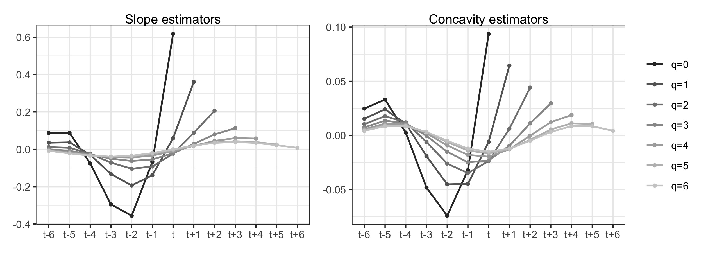
To distinguish the gain from the local parametrisation of the noise associated to the real-time estimates of the slope and concavity, in the empirical applications of Section 3.4 we also compares the results to the final local parametrisation obtained by estimating \(\delta\) using all the data (i.e., using the symmetric filters shown in figure 3.2), while maintaining a real-time estimate of \(\sigma^2\). Figure 3.3 shows an example of the comparison of estimates of the ratio \(|\delta_1/\sigma|\) with a global estimator (IC ratio) and two local parametrisations:
figure 3.3 (a): using a symmetric filter to estimate \(\delta_1\) (final local parametrisation).
figure 3.3 (b): using the asymmetric filter which need two points in the future to estimate \(\delta_1\). This is closed to the real-time estimates since two points in the future are needed to detect a turning point.
The turning points are clearly detected by the local estimators (slope tends towards zero) when \(|\delta_1/\sigma|\) is estimated in the real-time. However, the real-time local estimates of \(|\delta_1/\sigma|\) are noisy: the variability of these estimates, used to build asymmetric filters, will then lead to another source of revisions in the intermediate estimates.
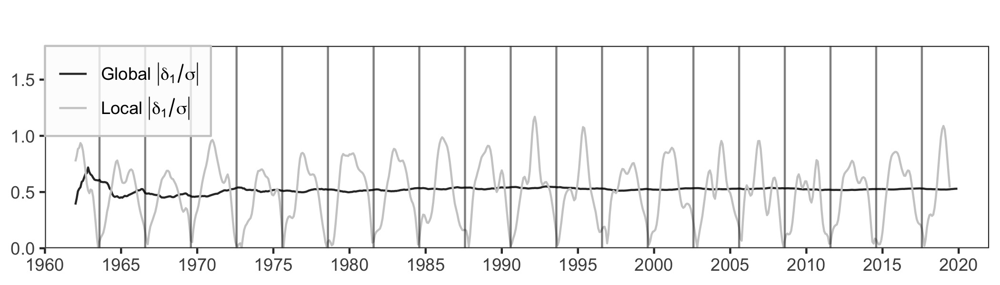
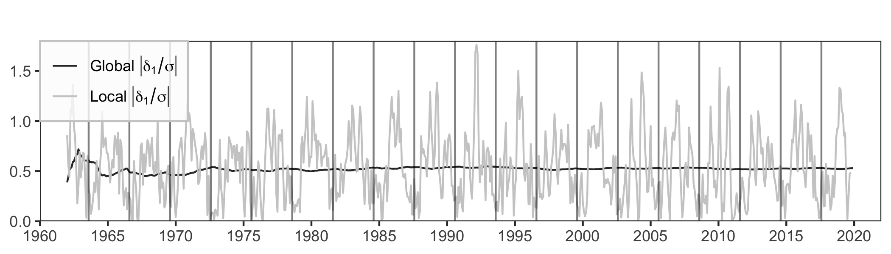
There is no function in rjd3filters to directly compute those moving averages but they can be easily computed using matrix computation formula and applied to the series using rjd3filters. See for example the file Simplified_example.R available at https://github.com/AQLT/joffstats2024.
3.4 Comparison of different methods
The different methods are compared on simulated and real data. For all series, a symmetric 13-term filter is used: we then assume than the bandwidth is fixed, as in the seasonal adjustment method X-11. A nearest neighbour bandwidth is also tested (13-term asymmetric filters: real-time filter uses observations between \(y_{t-12}\) and \(y_{t}\), the second asymmetric filter uses observations between \(y_{t-11}\) and \(y_{t+1}\), etc.) but with no improvement in the results (see supplemental material). More complex methods to locally select bandwidth, like the one proposed by Fan et Gijbels (1992), were not tested. All the methods to create asymmetric filters are also compared with estimates obtained by extending the series with an ARIMA model, then applying a 13-term symmetric Henderson filter. The ARIMA model is determined automatically, using Hyndman et Khandakar (2008) algorithm (function forecast::auto.arima()) on the last 12 years, with no seasonal lag (the series being seasonally adjusted) and no external variables (such as external regressors for correction of atypical points). The performance of the different methods is judged on criteria relating to revisions (between two consecutive estimates and in relation to the final estimate) and the number of periods required to detect turning points.
3.4.1 Simulated series
3.4.1.1 Methodology
Following a methodology close to that of Darné et Dagum (2009), nine monthly series are simulated between January 1960 and December 2020 with different levels of variability. Each simulated series \(y_t= C_t+ T_t + I_t\) can be written as the sum of three components:
the cycle \(C_t = \rho [\cos (2 \pi t / \lambda) +\sin (2 \pi t / \lambda)]\), \(\lambda\) is fixed at 72 (6-year cycles, so there are 19 detectable turning points);
the trend \(T_t = T_{t-1} + \nu_t\) with \(\nu_t \sim \mathcal{N}(0, \sigma_\nu^2)\), \(\sigma_\nu\) being fixed at \(0.08\);
and the irregular \(I_t = e_t\) with \(e_t \sim \mathcal{N}(0, \sigma_e^2)\).
For the different simulations, we vary the parameters \(\rho\) and \(\sigma_e^2\) in order to obtain series with different signal-to-noise ratios (see figure 3.4):
High signal-to-noise ratio (i.e., low I-C ratio and low variability): \(\sigma_e^2=0.2\) and \(\rho = 3.0, 3.5\) or \(4.0\) (I-C ratio between 0.9 and 0.7);
Medium signal-to-noise ratio (i.e., medium I-C ratio and medium variability): \(\sigma_e^2=0.3\) and \(\rho = 1.5,\, 2.0\) or \(3.0\) (I-C ratio between 2.3 and 1.4);
Low signal-to-noise ratio (i.e., high I-C ratio and high variability): \(\sigma_e^2=0.4\) and \(\rho = 0.5,\, 0.7\) or \(1.0\) (I-C ratio between 8.9 and 5.2).
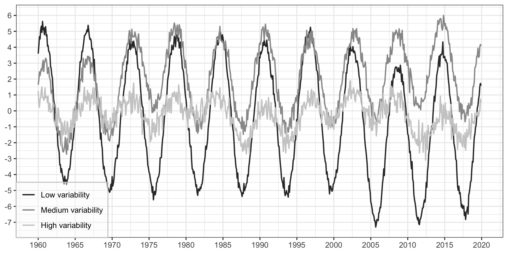
For each series and each date, the trend-cycle is estimated using the different methods presented in this paper. Three quality criteria are computed:
The phase shift in the detection of turning points. In this paper, we focus on turning points associated to business cycle: it is defined as the succession of phases of economic recession and expansion, delimited by peaks (highest level of activity) and troughs (lowest level of activity), see for example Ferrara (2009) for a description of the different economic cycles. In this paper, following Zellner, Hong, et Min (1991), we used an accepted definition for turning-points:
- An upturn occurs when the economy moves from a phase of recession to a phase of expansion. This is the case at date \(t\) when \(TC_{t-3}\geq TC_{t-2}\geq TC_{t-1}<TC_t\leq TC_{t+1}\).
- A downturn occurs when the economy moves from a phase of expansion to a phase of recession. This is the case at date \(t\) when \(TC_{t-3}\leq TC_{t-2}\leq TC_{t-1}>TC_t\geq TC_{t+1}\).
Let’s denote \(TC_{t|t'}\) the estimate of the trend-cycle at date \(t\) using the data up to date \(t'\). The phase shift is often defined as the number of months required to detect the right turning point: it would then be equal to two if, in the case of a downturn, \(TC_{t-3|t+1}\leq TC_{t-2|t+1}\leq TC_{t-1|t+1}>TC_{t|t+1}\geq TC_{t+1|t+1}\) (two observations, at dates \(t\) and \(t+1\), are needed to qualify the date \(t\) as turning point). Note that, in that case, the phase shift could be equivalently set to 1 (only one observation after \(t\) is needed to define \(t\) as a turning point), without any difference on the comparison of the different methods.
In this paper we use a slightly modified criterion: the phase shift is defined as the number of months needed to detect the right turning point without any future revision. Thus, in the case of a downturn, the phase shift is two if \(TC_{t-3|t+1}\leq TC_{t-2|t+1}\leq TC_{t-1|t+1}>TC_{t|t+1}\geq TC_{t+1|t+1}\) and, for all dates \(t'\) higher than \(t+1\): \(TC_{t-3|t'}\leq TC_{t-2|t'}\leq TC_{t-1|t'}>TC_{t|t'}\geq TC_{t+1|t'}\). Since a 13-term Henderson filter is used for the final estimates of the trend-cycle, the phase shift is at most height (the final estimate of \(TC_{t+1}\) is compute at the date \(t+7\)). This definition is used because it can happen that the right turning point is detected by asymmetric filters but is not detected by the final estimate using a symmetric filter (this is the case for 41 reversal points out of the 9 series with asymmetric Musgrave filters) or that there are revisions in successive estimates (this is the case for 7 turning points out of the 9 series with asymmetric Musgrave filters). Finally, relatively few turning points are detected at the right date with the final estimate. With the 13-term Henderson filter, 18 are correctly detected in series with low variability (out of 57 possible), 11 in series with medium variability and 12 in series with high variability.- An upturn occurs when the economy moves from a phase of recession to a phase of expansion. This is the case at date \(t\) when \(TC_{t-3}\geq TC_{t-2}\geq TC_{t-1}<TC_t\leq TC_{t+1}\).
The average of the relative deviations between to the last estimate (comparison of the \(q\)th estimate and the last estimate): \[ MAE_{fe}(q)=\mathbb E\left[ \left|\frac{ TC_{t|t+q} - TC_{t|last} }{ TC_{t|last} }\right| \right]. \]
The average of the relative deviations between two consecutive estimates (the \(q\)th estimate and the \(q+1\)th estimate): \[ MAE_{ce}(q)=\mathbb E\left[ \left|\frac{ TC_{t|t+q} - TC_{t|t+q+1} }{ TC_{t|t+q+1} }\right| \right]. \]
The simulated series are of length 60 years, which is often not realistic for economic time series. However, since all the methods are local, the results are not affected by the length of the series. The length of the series would only have an impact for the identification and the estimation of the ARIMA model. In this case, since the same data generating process is used during the 60 years, it could be relevant to identify the ARIMA model using all the data. Even if it would improve the results in term of phase shift (see supplemental material) we prefer to only use the last 12 years to identify and estimate the ARIMA model, to be closer to what would have been done with a real-time series.
3.4.2 Comparison
Figure 3.5 represents box plots of the phase shift: the box represents the interquartile range, the central horizontal line represents the median, the dot represents the outliers and the whisker the range of the data (if no outlier). For simulated series with medium variability (when a symmetric filter of length 13 is relevant), with the linear constant (LC) method, 50% of the turning point are detected with a phase shift of at most 5 months whereas when the LC filter is parametrised locally, 50% of the turning point are detected with a phase shift of at most 4 months. For the direct asymmetric filter (DAF), 25% of the turning are detected with a phase shift of at least 7 months (compares to 5 for the LC method).
Excluding for the moment the local parametrisations of the polynomial filters, the linear-constant polynomial filter (LC) seems to give the best results in terms of delay in the detection of turning points. Performance is relatively close to that obtained by extending the series using an ARIMA model. However, when variability is low, the LC filter seems to give poorer results and the quadratic-linear polynomial filter (QL) seems to give the best results.
For series with moderate variability, local parametrisation of the LC and QL filters reduces the phase shift. For series with high variability, the phase shift is only reduced by using the final \(\hat\delta\) parameters: real-time estimates seem to add more variance. For series with low variability, performance seems to be slightly improved only with the LC filter.
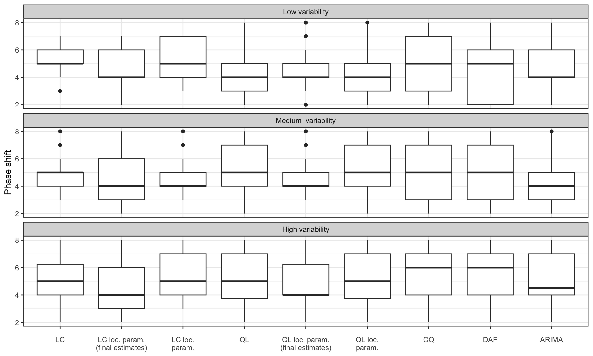
Observe table 3.1 the average of the relative deviations with medium variability. The estimates for \(q=0\) correspond to the first estimates of the trend-cycle (real-time estimates when 0 point in the future is known), \(q=1\) correspond to the second estimates of the trend-cycle (when 1 point in the future is known). Since the final estimates are obtain using a symmetric filter of bandwidth 6, \(q=6\) corresponds to the final estimates of the trend-cycle (when 6 points in the future are known). \(MAE_{fe}(0)\) compares the revision between the first estimate (\(q=0\)) and the last estimate (\(q=6\)) and \(MAE_{ce}(0)\) compares the revision between the first estimate (\(q=0\)) and the second estimate (\(q=1\)).
In terms of revisions, the variability of the series has little effect on the respective performances of the different methods, but it does affect the orders of magnitude, which is why the results are presented only for series with medium variability. In general, LC filters always minimise revisions (with relatively small effect from the local parametrisation of the filters) and revisions are greater with cubic-quadratic (CQ) and direct (DAF) polynomial filters.
For the QL filter, there is a large revision between the second and third estimates: this may be due to the fact that for the second estimate (when one point in the future is known), the QL filter assigns a greater weight to the estimate in \(t+1\) than to the estimate in \(t\), which creates a discontinuity. This revision is considerably reduced by parametrising the filter locally. For polynomial filters other than the LC filter, the large revisions at the first estimate were to be expected given the coefficient curve: a very large weight is associated with the current observation and there is a strong discontinuity between the moving average used for real-time estimation (when no point in the future is known) and the other moving averages.
Extending the series using an ARIMA model gives revisions with the latest estimates of the same order of magnitude as the LC filter, but slightly larger revisions between consecutive estimates, particularly between the fourth and fifth estimates (as might be expected as highlighted in Section 3.2.3).
| Method | \(q=0\) | \(q=1\) | \(q=2\) | \(q=3\) | \(q=4\) | \(q=5\) |
|---|---|---|---|---|---|---|
| \(MAE_{fe}(q) = \mathbb E\left[\left|(TC_{t|t+q} - TC_{t|last})/TC_{t|last}\right|\right]\) | ||||||
| LC | 0.21 | 0.10 | 0.03 | 0.03 | 0.03 | 0.01 |
| LC local param. (final estimates) | 0.19 | 0.09 | 0.03 | 0.03 | 0.03 | 0.01 |
| LC local param. | 0.29 | 0.10 | 0.03 | 0.03 | 0.03 | 0.01 |
| QL | 0.33 | 0.10 | 0.04 | 0.04 | 0.03 | 0.01 |
| QL local param. (final estimates) | 0.21 | 0.10 | 0.03 | 0.03 | 0.03 | 0.01 |
| QL local param. | 0.30 | 0.10 | 0.04 | 0.03 | 0.03 | 0.01 |
| CQ | 0.45 | 0.13 | 0.13 | 0.09 | 0.06 | 0.02 |
| DAF | 0.47 | 0.15 | 0.15 | 0.09 | 0.06 | 0.02 |
| ARIMA | 0.22 | 0.10 | 0.03 | 0.03 | 0.03 | 0.01 |
| \(MAE_{ce}(q)=\mathbb E\left[ \left|(TC_{t|t+q} - TC_{t|t+q+1})/TC_{t|t+q+1}\right| \right]\) | ||||||
| LC | 0.19 | 0.10 | 0.02 | 0.01 | 0.07 | 0.01 |
| LC local param. (final estimates) | 0.20 | 0.10 | 0.03 | 0.01 | 0.05 | 0.01 |
| LC local param. | 0.24 | 0.11 | 0.03 | 0.01 | 0.05 | 0.01 |
| QL | 0.29 | 3.46 | 0.00 | 0.03 | 0.04 | 0.01 |
| QL local param. (final estimates) | 0.31 | 0.11 | 0.02 | 0.01 | 0.04 | 0.01 |
| QL local param. | 0.24 | 0.16 | 0.00 | 0.03 | 0.04 | 0.01 |
| CQ | 0.43 | 0.02 | 0.10 | 0.07 | 0.05 | 0.02 |
| DAF | 0.66 | 0.24 | 0.11 | 0.14 | 0.06 | 0.02 |
| ARIMA | 0.23 | 0.10 | 0.02 | 0.03 | 0.25 | 0.01 |
3.4.3 Real series
The differences between the methods are also illustrated using an example from the FRED-MD database (McCracken et Ng (2016)) containing economic series on the United States. This database facilitates the reproducibility of the results thanks to the availability of series published on past dates. The series studied correspond to the database published in November 2022. It is the level of employment in the United States (series CE160V, used in logarithm) around the February 2001 turning point, consistent with the monthly dating of the turning points. This turning point was chosen because it is particularly visible in the raw series (figure 3.7) and this series was select because it is used for dating economic cycles. Studying the series up to January 2020, this series has a medium variability: a symmetric filter of 13 terms is therefore appropriate.
Figure 3.6 shows the successive estimates of the trend-cycle using the different methods studied. For this series, the phase shift is 6 months for the LC and CQ methods and the extension of the series by ARIMA. It is of two months for the other methods (QL, DAF). In this example, local parametrisation does not reduce the phase shift, but it does reduce revisions. The QL and DAF polynomials lead to greater variability in the intermediate estimates, especially in February 2001.
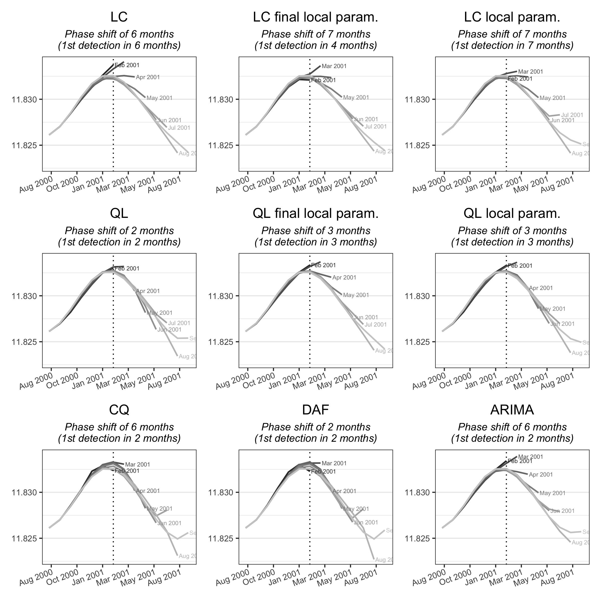
The quality of the intermediate estimates can also be analysed using the implicit forecasts of the different methods (figure 3.7). As a reminder, these are forecasts of the raw series which, by applying the symmetric Henderson filter to the extended series, give the same estimates as the asymmetric moving averages. The forecasts of the ARIMA model are naive and do not take the turning point into account, unlike the other methods. Finally, local parametrisation of the QL filter produces much more consistent forecasts.
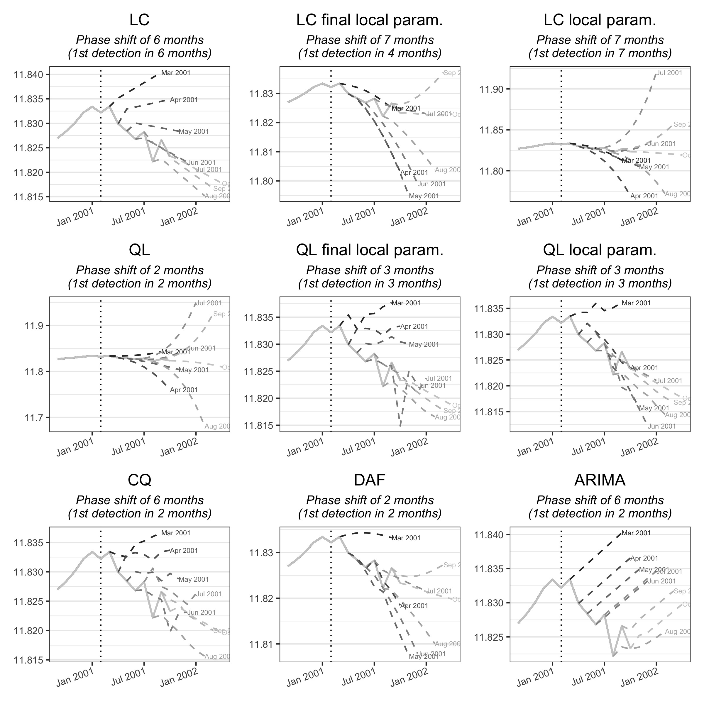
3.4.4 Discussion
In the section we discuss the applicability of the presented methods to other frequencies (Section 3.4.4.1) and some limits of the presented methods (for example sensitivity to outliers like COVID-19, Section 3.4.4.2) .
3.4.4.1 Other frequencies
In this paper, we focused on monthly series, but the methods presented can be applied to other frequencies. In general, for lower frequencies, the bandwidth of the symmetric filter reduced. For example, for quarterly series, X-11 uses a 5-term symmetric filter (in general) or 7-term symmetric filter for series with high variability. Mechanically, since fewer points are used, there will be less differences between methods in term of phase shift. For example, on simulated series the results are similar in terms of phase shift but revisions are reduced with local parametrisation (see supplemental material).
Since X-13ARIMA-SEATS can only be applied for series with frequency lower than monthly, for higher frequencies (weekly, daily, etc.), there is no reference on the length of the filters to uses. The length of the filters can be determined using local polynomial methods, for example minimising a statistic such as cross-validation (rjd3filters::cv()), CP (rjd3filters::cp()) or Rice’s T (rjd3filters::rt()), or with more complex methods as describe by Loader (1999), but it will surely be necessary to use higher bandwidth than for monthly series. The larger the window, the greater the bias in assuming that the trend is locally of degree 1: the LC method will then be certainly less appropriate than other methods (QL, CQ or DAF). Moreover, since the bias is higher, the local parametrisation of the filters will surely have more impact.
3.4.4.2 Outliers and COVID-19
In this article and in those associated to trend-cycle extraction techniques, the moving averages are applied and compared on series already seasonally adjusted or without seasonality (simulated series). The revisions and the phase shift are limited to 8 months (when the symmetric filter is 13 terms) and this has the advantage of isolating the impacts of the different filters from the other processes inherent in seasonal adjustment. There are, however, two drawbacks to this simplification:
The estimation of the seasonally-adjusted series depends on the method used to extract the trend-cycle. The choice of method used to estimate the trend-cycle can therefore have an impact well beyond 6 months (when a 13-term Henderson filter is used).
As moving averages are linear operators, they are sensitive to the presence of atypical points. Direct application of the methods can therefore lead to biased estimates, due to their presence, whereas seasonal adjustment methods (such as the X-13ARIMA-SEATS method) have a correction module for atypical points. Furthermore, as shown in particular by Dagum (1996), the final symmetric filter used by X-13ARIMA-SEATS to extract the trend-cycle (and therefore the one indirectly used when applying the methods to seasonally-adjusted series), reduces by just 38% cycles of length 9 and 10 months (generally associated with noise rather than the trend-cycle). The final asymmetric filters even amplify 9 and 10-month cycles. This can result in the introduction of undesirable ripples, i.e., the detection of false turning points. This problem is reduced by correcting atypical points and the Nonlinear Dagum Filter (NLDF) was defined in this perspective:
applying the X-11 atypical point correction algorithm (see for example Ladiray et Quenneville 2011 for a description) to the seasonally adjusted series, then extending it with an ARIMA model;
perform a new atypical point correction using a much stricter threshold and then apply the 13-term symmetric filter. Assuming a normal distribution, this amounts to modifying 48% of the irregular values.
The cascade linear filter (CLF), studied in particular in Dagum et Bianconcini (2023), corresponds to an approximation of the NLDF using a 13-term filter and when the forecasts are obtained from an ARIMA(0,1,1) model where \(\theta=0.40.\).
Figure 3.8 and figure 3.9 show the successive estimates of the trend-cycle and the associated implicit forecast for the US employment during the COVID-19. First, we observe that while the real turning point is in April 2020, the 13-term Henderson filter produces final estimates of the trend-cycles, biased by the presence of a huge outlier, which lead to a turning point detected in June 2020. Second, as in 2001, the CQ and DAF methods lead to lots of variability in the intermediate estimates. For the QL method, the local parametrisation seems to slightly reduce the revisions. For the LC method, local parametrisation has little impact on the estimates of the trend-cycle but the associated implicit forecasts are not plausible: the final estimate of the slope is biased by the outlier. Third, the ARIMA model can lead to unrealistic forecasts.
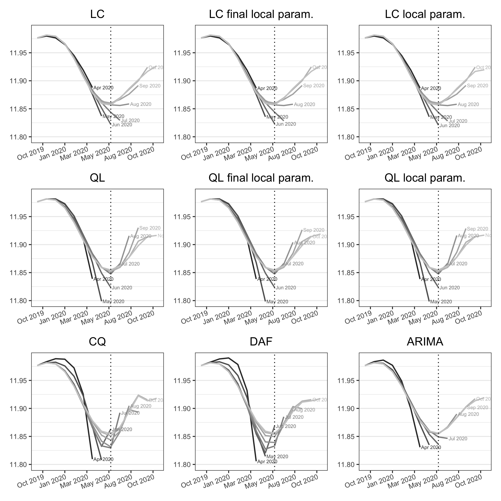
Note: the dotted vertical line corresponds to the date of the turning point (June 2020) detected with the 13-term Henderson filter but the real one is June 2020. The curve “Apr 2020” corresponds to the estimates of the trend-cycle using the data observed until April 2020.
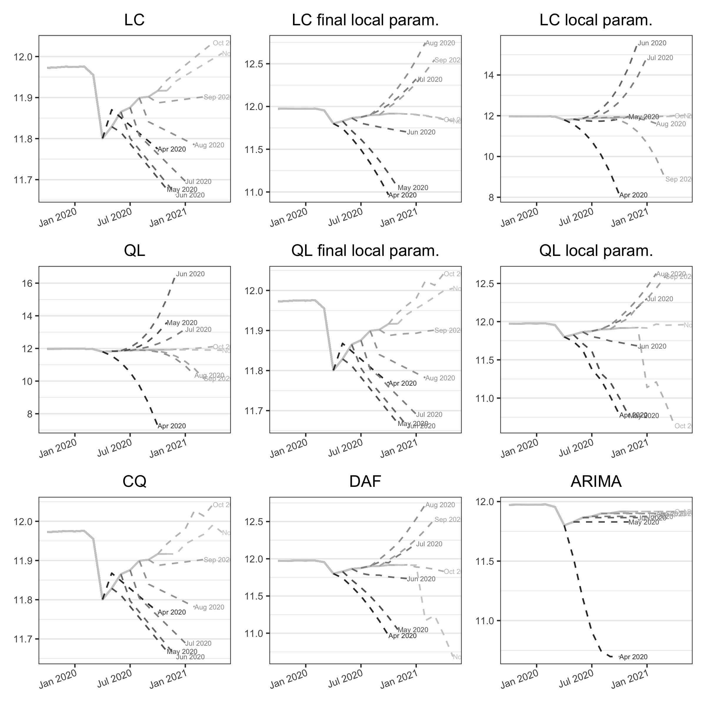
Note: the curve “Apr 2020” corresponds to the implicit forecasts associated to the asymmetric filters used for the trend-cycle estimations using the data observed until April 2020.
To sum up, trend-cycle estimates are biased by the presence of outliers which can also impact the detection of turning-points. Several approach could be used to limit their impact of to directly take them into account:
Adjustment of outliers prior to filtering, for example with a RegARIMA model or other correction modules like the one used in X-11.
Increase the bandwidth of the filter used to extract the trend-cycle (it will smooth the trend-cycle by giving less weights to the atypical points).
Since all the filters studied in this paper are equivalent to a local polynomial model, an external regressor can be added to the linear model to handle the outlier (the matrix \(\boldsymbol X\) would then be modified). In the case of an additive outlier, this is equivalent to setting to 0 the coefficient of the moving average associated to the date of the outlier (using \(y_{t-h}\) to \(y_{t+h}\) for the trend-cycle estimates, if the outlier is at the date \(t\) the central coefficient is set to 0) and renormalise the sum of the coefficients to 1.
Use of robust methods to estimate the trend-cycle, such as robust local regressions or moving medians.
3.5 Conclusion
For business cycle analysis, most statisticians use trend-cycle extraction methods, either directly or indirectly. They are used, for example, to reduce the noise of an indicator in order to improve its analysis, and models, such as forecasting models, usually use seasonally adjusted series based on these methods.
This paper presents the R package rjd3filters, which implements several methods to build moving averages for real-time trend-cycle estimation. It also offers various functions for the theoretical analysis of moving averages (gain functions, phase shift, quality criteria, etc.) and judging the quality of the latest estimates (for example with implicit forecasts). It also makes it easy to combine moving averages and also to integrate custom moving averages into the X-11 seasonal adjustment algorithm. rjd3filters thus facilitates research into the use of moving averages as part of real-time cycle trend estimation. This is the case, for example, with the local parametrisation of Musgrave moving averages and other asymmetric moving averages linked to local polynomial regression, presented in this article.
By comparing the different methods, we can learn a few lessons about the construction of these moving averages.
During economic downturns, asymmetric filters used as an alternative to extending the series using the ARIMA model can reduce revisions to intermediate estimates of the trend-cycle and enable turning points to be detected more quickly.
At the end of the period, modelling polynomial trends of degree greater than three (cubic-quadratic, CQ, and direct, DAF) seems to introduce variance into the estimates (and therefore more revisions) without allowing faster detection of turning points. For real-time estimates of the trend-cycle, we can therefore restrict ourselves to methods modelling polynomial trends of degree two or less (linear-constant, LC, and quadratic-linear, QL). In addition, parametrising polynomial filters locally as proposed in this paper enables turning points to be detected more quickly (especially for the QL filter). Even when the phase shift is not reduced, local parametrisation is recommended because it reduces revisions and produces intermediate estimates that are more consistent with expected future trends. However, with these methods, the length of the filter used must be adapted to the variability of the series: if the filter used is too long (i.e., if the variability of the series is “low”), retaining polynomial trends of degree one or less (LC method) produces poorer results in terms of detecting turning points.
This study could be extended in many ways. One possible extension would be to look at the impact of filter length on the detection of turning points. Asymmetric filters are calibrated using indicators calculated for the estimation of symmetric filters (for example, to automatically determine their length), whereas a local estimate might be preferable. Furthermore, we have only focused on monthly series with a 13-term symmetric filter, but the results may be different if the symmetric filter studied is longer or shorter and if we study series with other frequencies (weekly or daily, for example).
Another possibility could be to study the impact of atypical points: moving averages, like any linear operator, are highly sensitive to the presence of atypical points. To limit their impact, in X-11 a strong correction for atypical points is performed on the irregular component before applying the filters to extract the trend-cycle. This leads to examining the impact of these outliers on the estimation of the trend-cycle and turning points, and also to explore new types of asymmetric filters based on robust methods (such as robust local regressions or moving medians).
3.6 Annexes
3.6.1 Coefficients, gain and phase shift functions
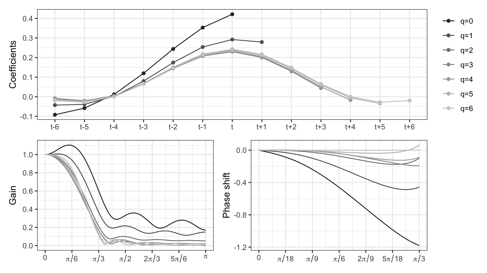
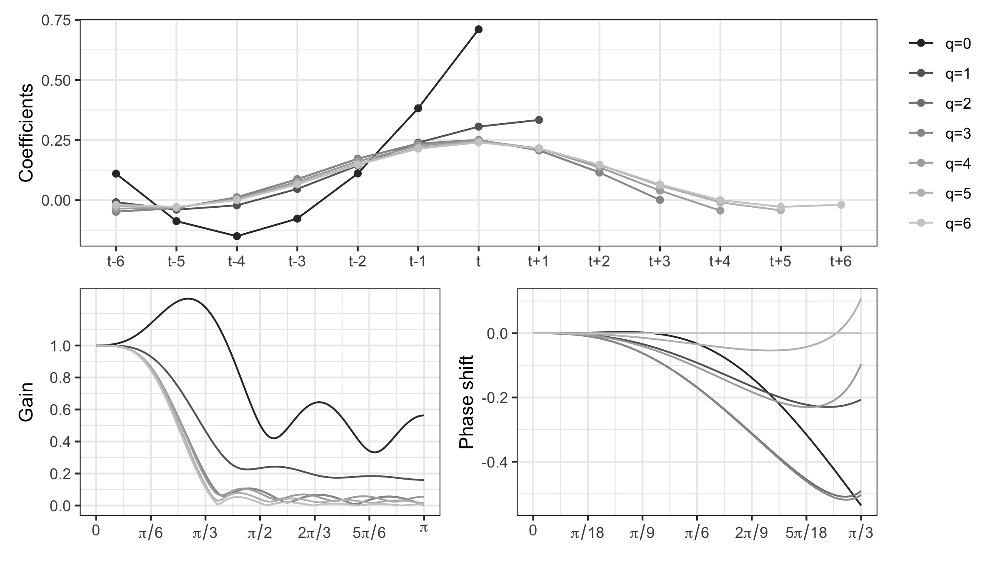
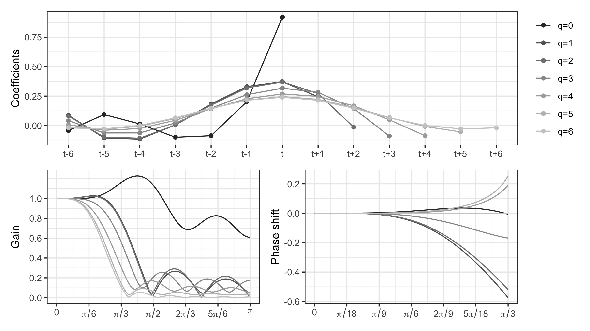
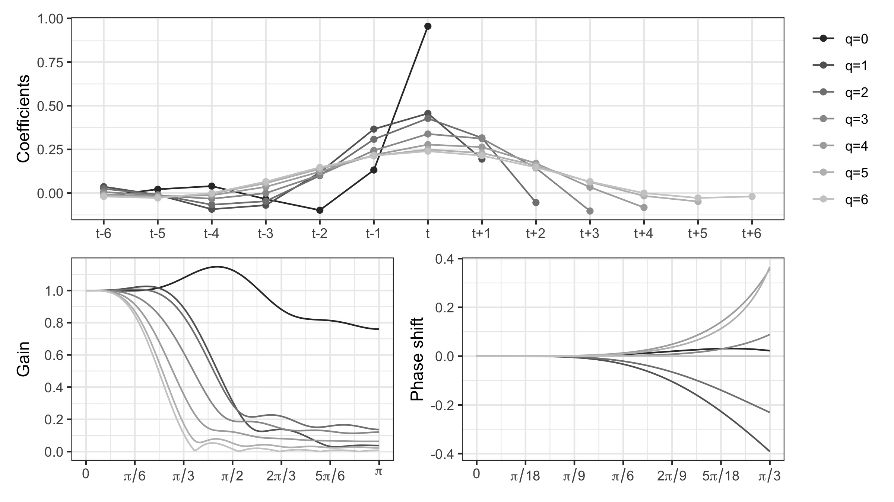
3.6.2 Different specifications for the estimation of the slope and concavity
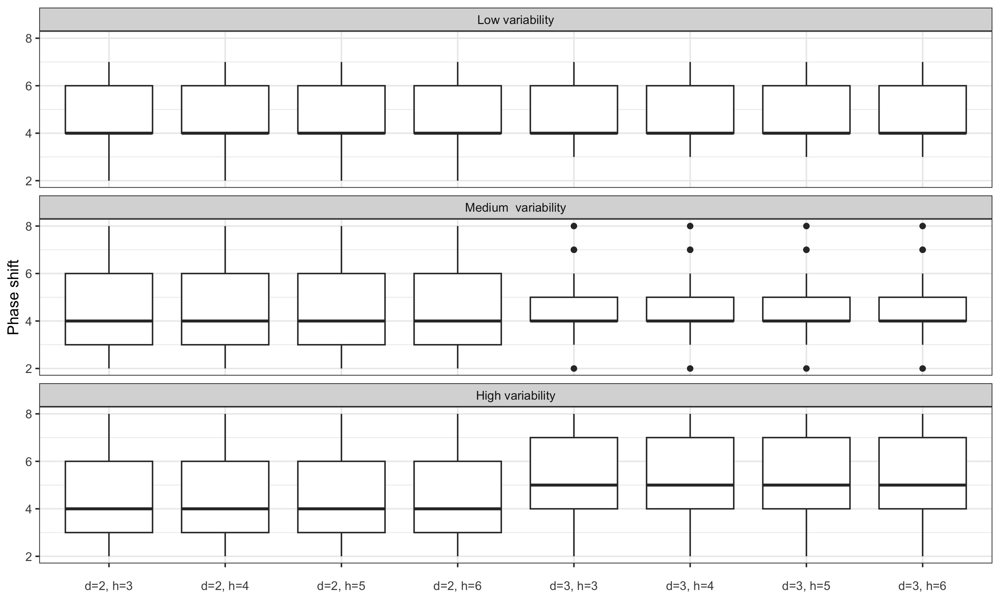
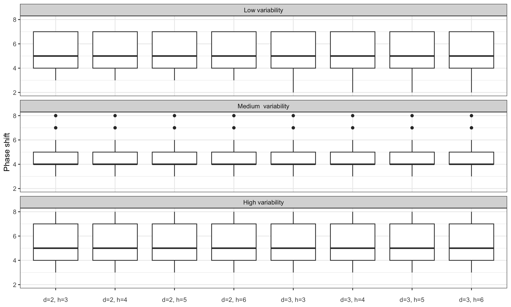
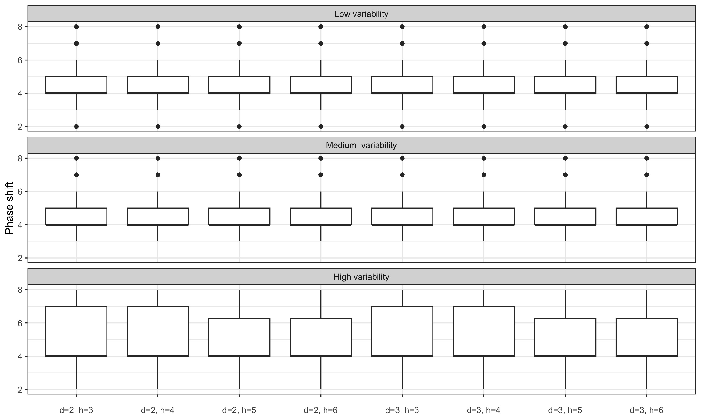
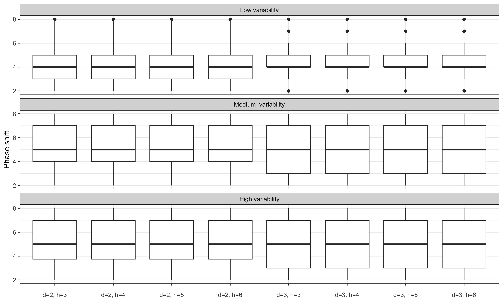
3.6.3 Impact of the span used to detect the ARIMA model
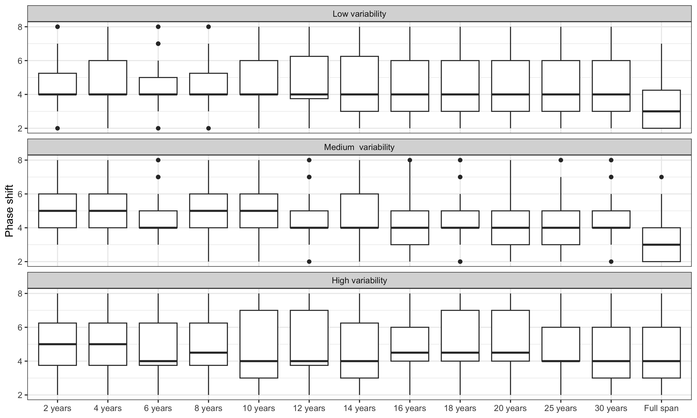
3.6.4 Nearest neighbour bandwidth
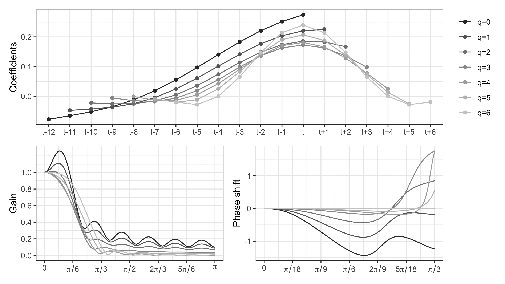
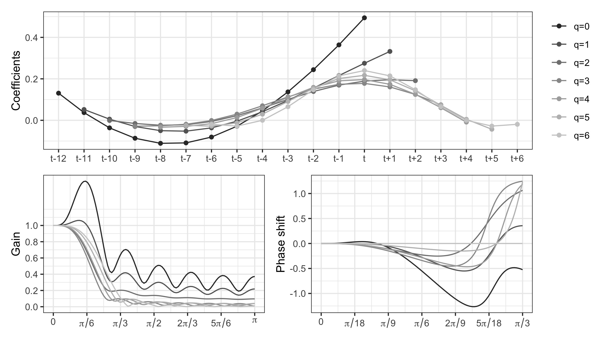
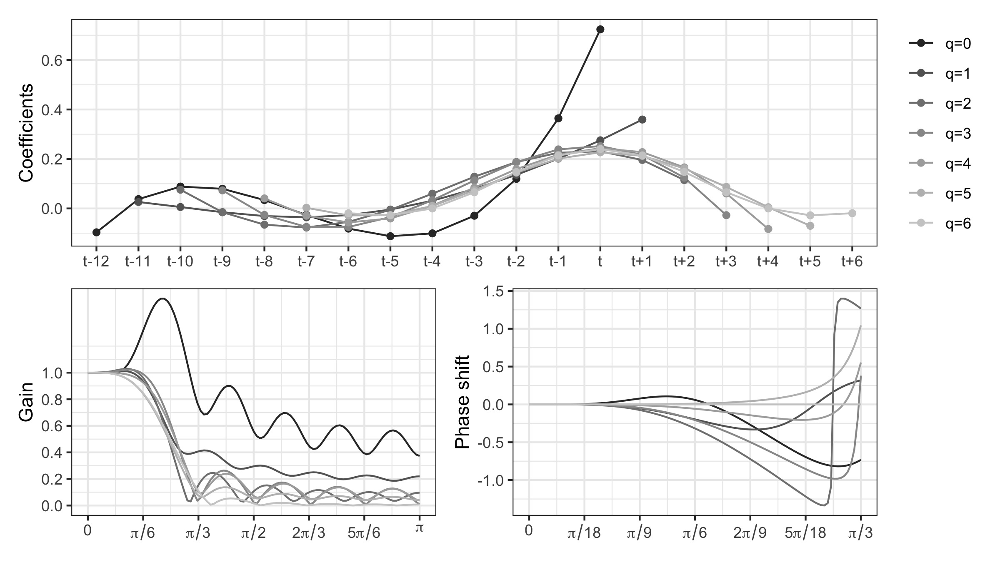
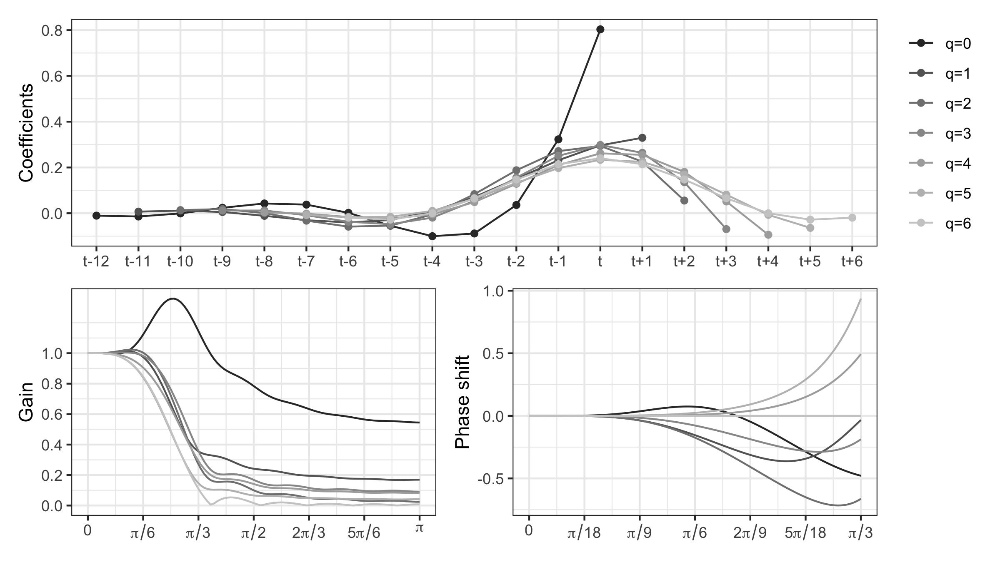
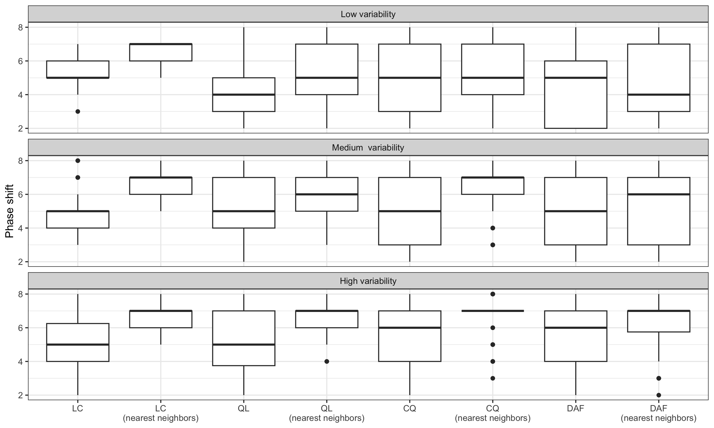
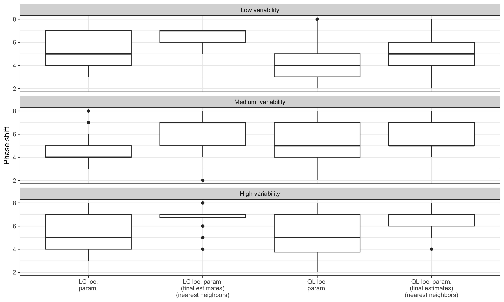
Note: nearest bandwidth moving average are used to estimate slope and concavity. We thus do not distinguish local parametrisation and final local parametrisation which assumptions might not be plausible. Indeed, using the same framework as for fixed bandwidth, the final local parametrisation for real-time estimates would imply modelling a polynomial of degree 2 or 3 other 25 months (which doesn’t seem plausible).
3.6.5 Quarterly data
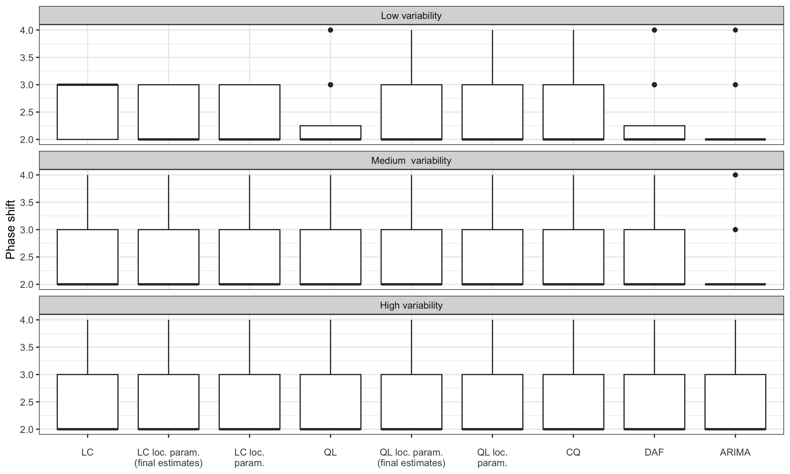
| Method | \(q=0\) | \(q=1\) |
|---|---|---|
| \(MAE_{fe}(q) = \mathbb E\left[\left|(TC_{t|t+q} - TC_{t|last})/TC_{t|last}\right|\right]\) | ||
| LC | 0.76 | 0.11 |
| LC local param. (final estimates) | 0.73 | 0.11 |
| LC local param. | 0.71 | 0.12 |
| QL | 0.93 | 0.46 |
| QL local param. (final estimates) | 0.58 | 0.12 |
| QL local param. | 0.97 | 0.33 |
| CQ | 1.15 | 1.02 |
| DAF | 1.15 | 0.43 |
| ARIMA | 0.49 | 0.26 |
| \(MAE_{ce}(q)=\mathbb E\left[ \left|(TC_{t|t+q} - TC_{t|t+q+1})/TC_{t|t+q+1}\right| \right]\) | ||
| LC | 0.36 | 0.11 |
| LC local param. (final estimates) | 0.32 | 0.11 |
| LC local param. | 0.34 | 0.12 |
| QL | 1.75 | 0.46 |
| QL local param. (final estimates) | 0.23 | 0.12 |
| QL local param. | 0.40 | 0.33 |
| CQ | 0.07 | 1.02 |
| DAF | 0.75 | 0.43 |
| ARIMA | 0.27 | 0.26 |